Cara tulisan masuk, bergerak dan keluar (macam tab Animations).
Masuk (In)
T1 Taip huruf demi hurufT2 Pudar masukT3 Pop melantunT4 Zoom masukT5 Luncur dari tepiT6 Jatuh dari atasT7 Huruf berpusing
Berulang (Loop)
T8 Neon berkelipT9 Cahaya bersinar (glow)T10 Glitch rosakT11 Bayang 3DT12 Garis luar dilukisT13 Kilauan emasT14 BergegarT15 Berdenyut ikut rentakT16 Beralun ombakT17 Melantun sekata
Sari kata
T18 KaraokeT19 Satu perkataan satu masaT20 Kotak latar bulatT21 Highlight penanda
Keluar (Out)
T22 Pudar keluarT23 Pecah berderaiT24 Padam & taip semula
🔠 Gaya Tulisan · S1–S36
Rupa tulisan: garis, cahaya, warna, tekstur (macam tab Effects).
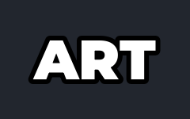
S1 Putih garis hitamS2 Sticker potong putihS3 Garis berganda
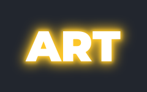
S4 Cahaya kuning
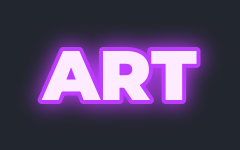
S5 Neon ungu
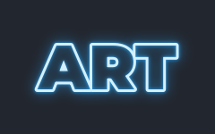
S6 Neon garis biru
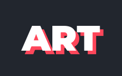
S7 Bayang keras
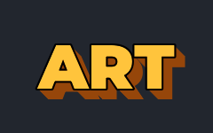
S8 Blok 3DS9 Gradien emas
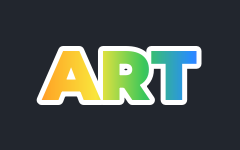
S10 Gradien pelangiS11 ApiS12 Ais
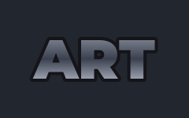
S13 Krom perak
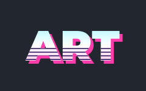
S14 Retro 80-an
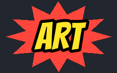
S15 Komik popS16 Kertas koyakS17 Pita merah
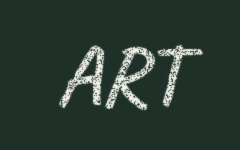
S18 Kapur papan hitam
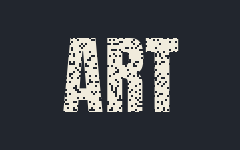
S19 Grunge lusuh
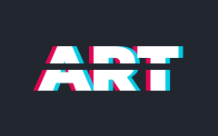
S20 Glitch RGB
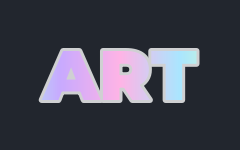
S21 Hologram
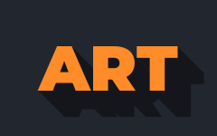
S22 Bayang panjang
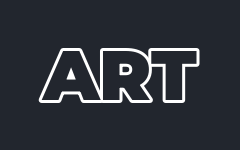
S23 Garis luar sahajaS24 Kotak tebuk (knockout)S25 Highlight penandaS26 Tulisan marker
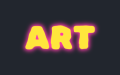
S27 Graffiti semburan
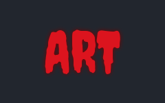
S28 Seram menitisS29 Kotak merah putih
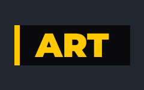
S30 Berita kuning-hitamS31 Pantulan cermin
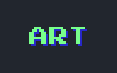
S32 Piksel 8-bit
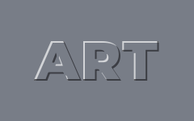
S33 Timbul (emboss)S34 Kaca bekuS35 Bayang lembut
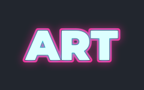
S36 Dua warna neon
🔤 Fon · F1–F1895
Rupa fon sebenar. Balas AI dengan kod F + nombor, contoh: F58 atau F1 + F23 (tajuk + sari kata). Jawi: J5. Semua fon Google Fonts (percuma untuk video).
Tebal / Tajuk Viral · 1–10, 71–80
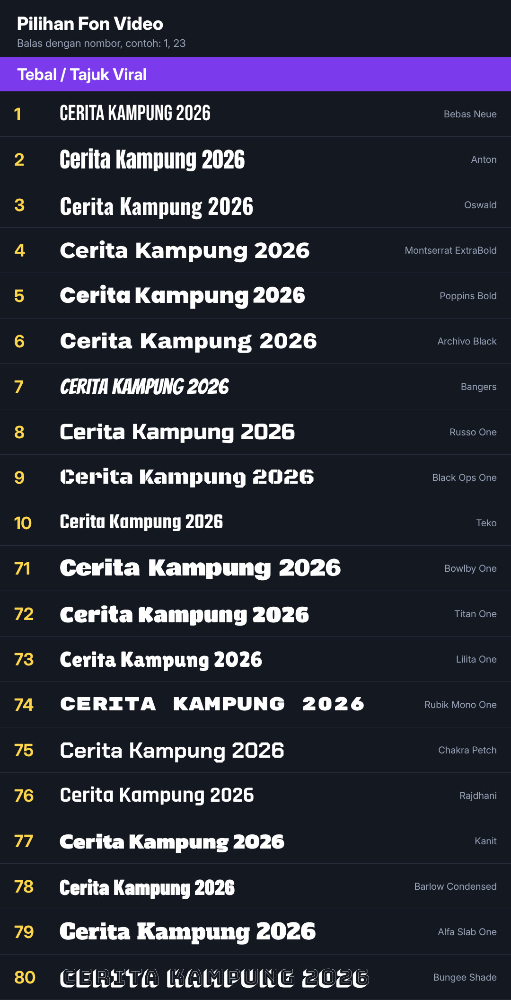
Bersih / Moden · 11–20
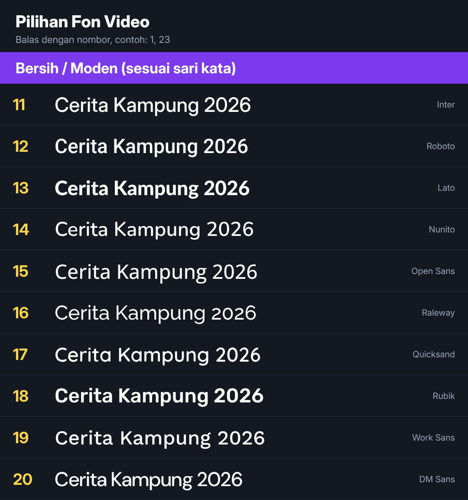
Klasik / Serif / Vintaj · 21–30, 81–90
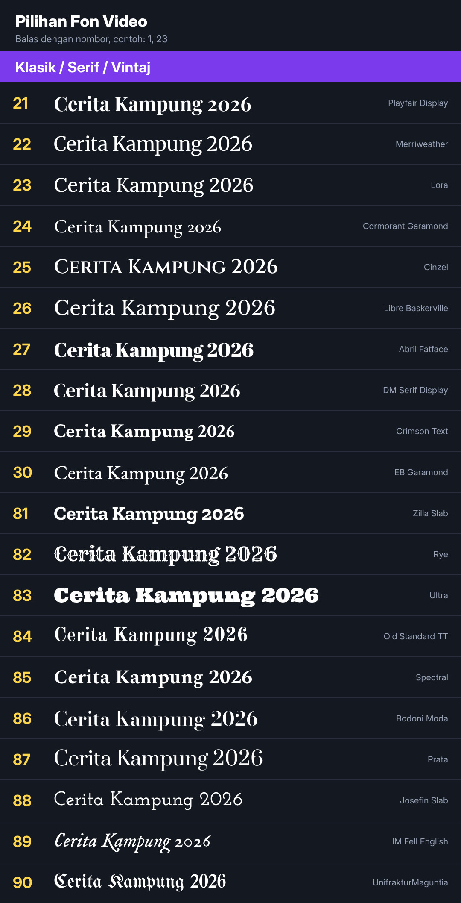
Tulisan Tangan / Skrip · 31–40, 91–100
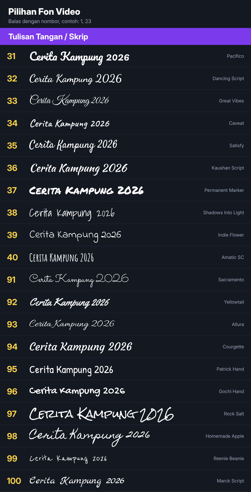
Tema / Unik · 41–50
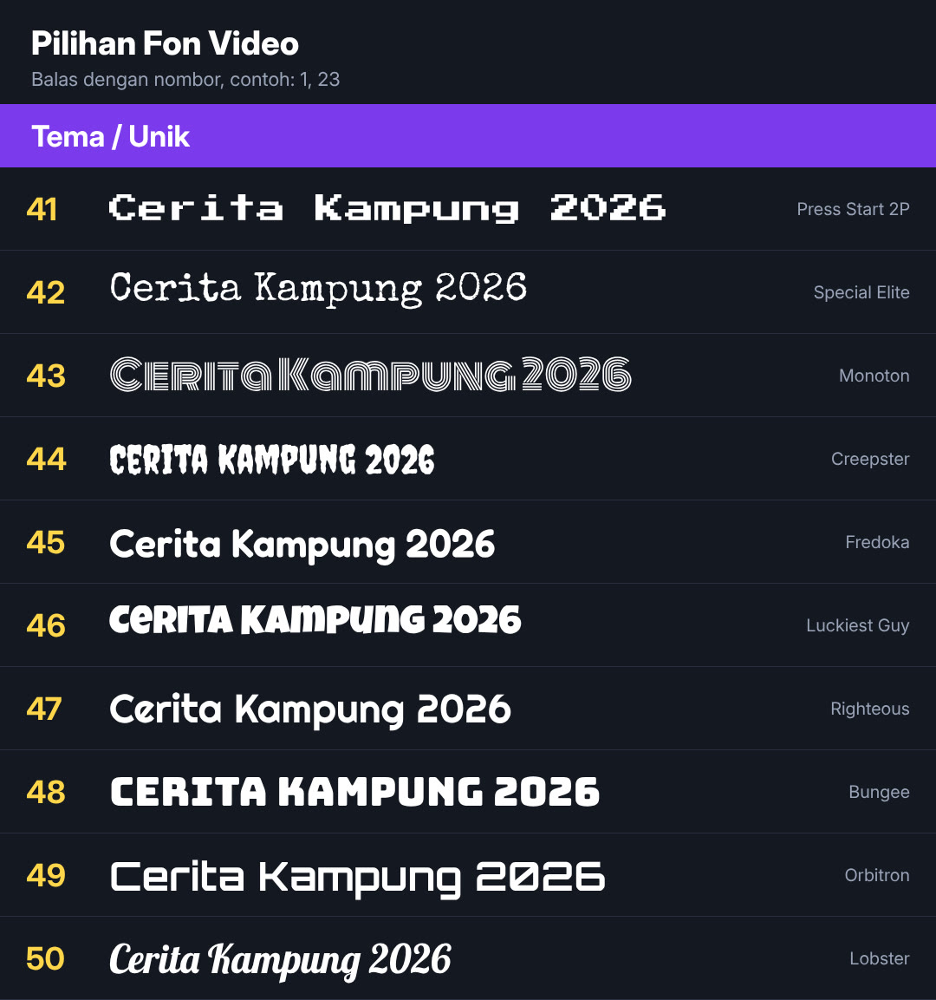
Mesin Taip / Komputer Lama / Hacker · 51–70 (+41, 42)
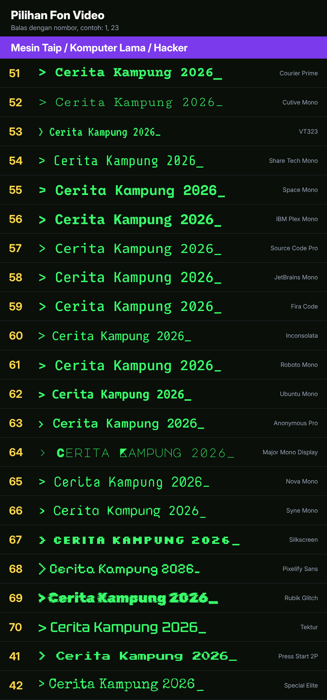
📄 Katalog penuh 1–1895 (PDF, buka dalam Google Drive)
B20 Papan amaranB21 Tanda soalan kuizB22 Label kiraan detik
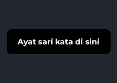
B23 Bar sari kata hitam
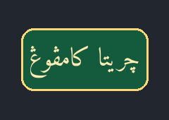
B24 Lencana Jawi
🔷 Bentuk Geometri · K1–K20
Bentuk bergerak untuk hiasan, latar dan bingkai tajuk.
K1 Bulatan berdenyutK2 Segi empat berpusingK3 Segi tiga berputarK4 Heksagon dilukisK5 Bintang berputarK6 Berlian berkilatK7 Gelombang bulatanK8 Kubus 3D berputarK9 Sfera dawaiK10 Grid titik beralunK11 Jalur bergerakK12 Corak isometrikK13 Mandala geometriK14 Bentuk terapung (latar)K15 Bingkai tajuk geometriK16 Spiral berputarK17 Poligon berubahK18 Bar equalizerK19 Orbit planetK20 Konfeti geometri
✏️ Doodle · D1–D24
Lukisan tangan yang dilukis sendiri di skrin: penanda, hiasan, emosi, bingkai.
D1 Anak panah melengkungD2 Bulatan tandaD3 Garis bawahD4 Pangkah XD5 Tanda betul ✓D6 Bintang berkelipD7 Kilauan ✨D8 Hati berdenyutD9 AwanD10 Matahari berputarD11 PetirD12 PercikanD13 Garis terkejut !!D14 Titik peluhD15 Tanda soalanD16 Garis lajuD17 Bingkai tanganD18 Kotak contenganD19 RebenD20 Jejak titik-titikD21 Gajah doodleD22 Rumah kampungD23 Pokok kelapaD24 Roda gear berputar